Техника
Республики
Наземная, воздушная и космическая техника Великой Армии Республики
Наземная техника
BARC спидер
Модель одноместного модифицированного спидера, изначально используемая элитными разведчиками-коммандос при выполнении опасных заданий во время Войн клонов. Хорошо себя зарекомендовав, данный транспорт стал использоваться и другими солдатами Великой армии Республики.
- Длина: 4,57 м
- Максимальная скорость: 520 км/ч
- Вооружение: Лёгкая сдвоенная бластерная пушка
- Экипаж: 1 водитель
- Грузоподъёмность: 5 кг
- Производитель: Репульсорная компания «Аратек»
- Стоимость: новый — 8300 кредитов, поддержанный — 1500
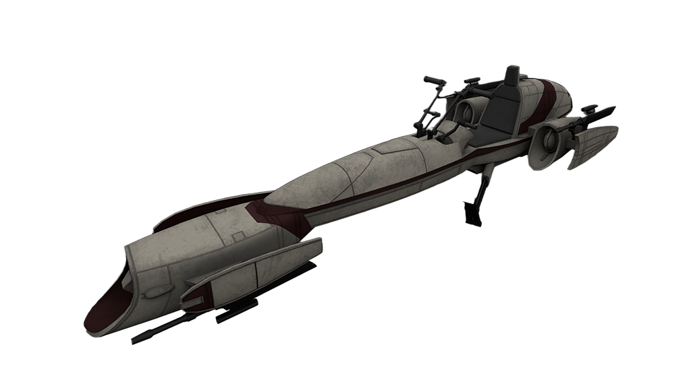
СВУП-СК-6
Все CK-6 обладали закрытыми транспластилом кабинами, что эффективно защищало их пилотов от снега и холодного ветра. Эти свупы продолжали работать в самые суровые метели и позволяли солдатам-клонам вести боевые действия в таких условиях, когда использование канонерок не представлялось возможным.
- Производитель: Неизвестен
- Тип: Снежный вездеход
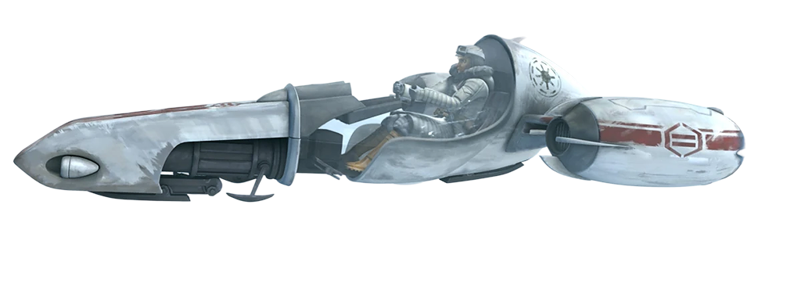
AT-RT
Лёгкий маневренный шагоход, использовавшийся преимущественно на городском, песчаном и болотном театрах боевых действий. AT-RT являлся предшественником шагоходов AT-ST и AT-PT. Изготовлен с открытым верхом с сиденьем и рулём, как у мотоспидера.
- Высота: 3,2 м
- Длина: 2,9 м
- Экипаж: 1
- Вооружение: Автоматическая бластерная пушка, миномётная установка
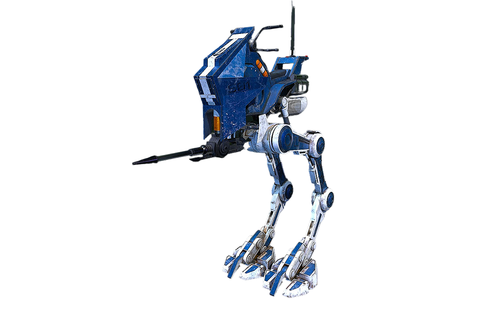
AT-XT
Штурмовой одноместный шагоход, созданный для Великой Армии Республики в ходе Войн Клонов. Не пошёл в серийное производство. Оснащался парными лазерными пушками и протонными миномётами. Один из первых шагоходов, оборудованных щитом.
- Тип: Экспериментальный шагоход
- Экипаж: 1
- Вооружение: Парные лазерные пушки, спаренные протонные миномёты
- Особенности: Защитный щит
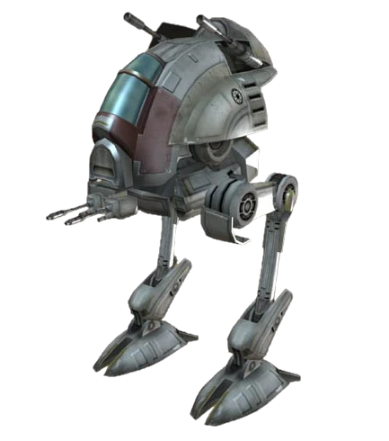
TX-130 боевой танк
Универсальное наземное боевое устройство Великой армии Республики. Более быстрый, чем первое поколение шагоходов, TX-130 нёс среднюю лазерную пушку как основное оружие. Второстепенным оружием была реактивная пусковая установка.
- Производитель: Тяжёлое машиностроение Ротаны
- Вооружение: Средняя лазерная пушка, реактивная пусковая установка
- Экипаж: 1 (джедай) или 3 (клоны)
- Особенности: Композитная броня, дефлекторные щиты
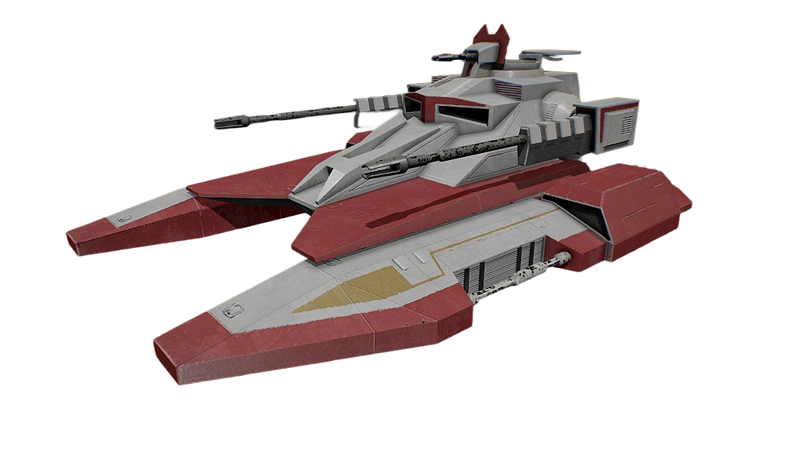
TX-427 истребительный танк
Лёгкий, скорострельный репульсорный танк, производимый компанией Rothana Heavy Engineering. Он был оснащён двумя боковыми тяжёлыми лазерными пушками, двумя боковыми ракетными установками и тяжёлой плазменной турелью.
- Производитель: Rothana Heavy Engineering
- Тип: Репульсорный танк
- Вооружение: Тяжёлые лазерные пушки, ракетные установки, плазменная турель
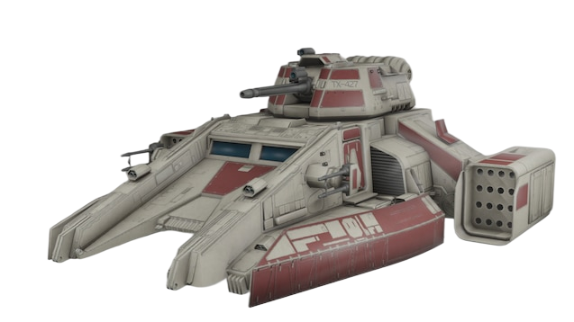
RX-200 «Фальшион»
Репульсорная боевая машина, напоминающая уменьшенную версию SPHA-T. В битве при Маластаре «Фальшионы» использовались для отражения воздушных атак сепаратистских бомбардировщиков типа «Гиена».
- Производитель: Неизвестен
- Тип: Репульсорный танк
- Особенности: Противовоздушная оборона
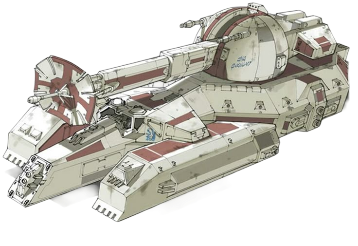
UT-AT «Трезубец»
Военно-транспортное штурмовое средство, использовавшееся там, где AT-TE были бесполезны. Репульсорный транспорт высокой проходимости с возможностью транспортировки солдат и хорошей огневой мощью.
- Производитель: Тяжёлое машиностроение Ротаны
- Экипаж: 2 (водитель, оператор вооружения)
- Вооружение: Тяжёлая лазерная пушка, лучемёты
- Вместимость: 30 солдат
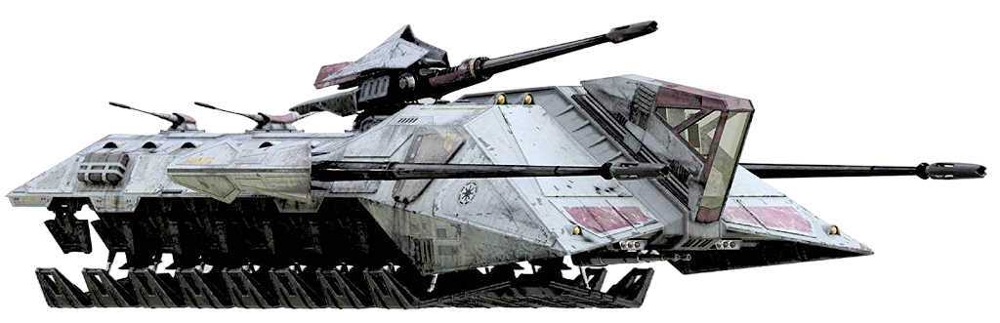
AT-AP
Шагоход с нестандартной подвеской из трёх шагающих опор, сочетавший элементы AT-TE и AT-PT. Применялся Великой армией Республики в конце Войны клонов.
- Тип: Штурмовой шагоход
- Вооружение: Бластерная пушка, тяжёлая пусковая установка, скорострельная лазерная пушка
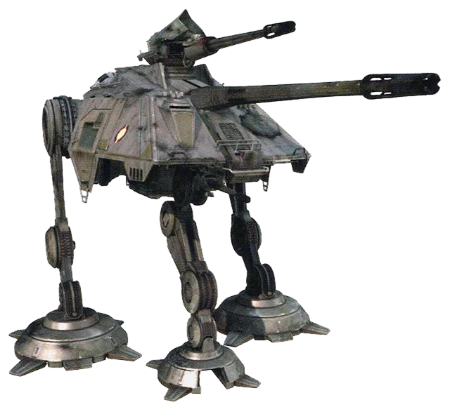
AT-OT
Транспортный шагоход, использовавшийся в качестве грузового и транспортного средства. Даже при восьмиопорной ходовой, хорошей броне и четырёх оборонительных лазерных орудиях, эти машины были очень уязвимы из-за открытого верха.
- Вместимость: 34+ солдат
- Вооружение: 4 оборонительные лазерные пушки
- Особенности: Открытый верх
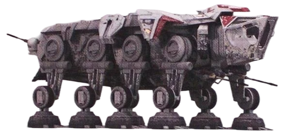
AT-TE
Шагающий штурмовой вездеход, разработанный для Великой армии Республики. Многоцелевая боевая машина, приспособленная для выполнения широкого спектра функций — от транспортировки отрядов до участия в атаках.
- Максимальная скорость: 60 км/ч
- Экипаж: 7 человек
- Вооружение: Электромагнитное орудие, 6 лазерных орудий
- Особенности: Электромагнитные щиты
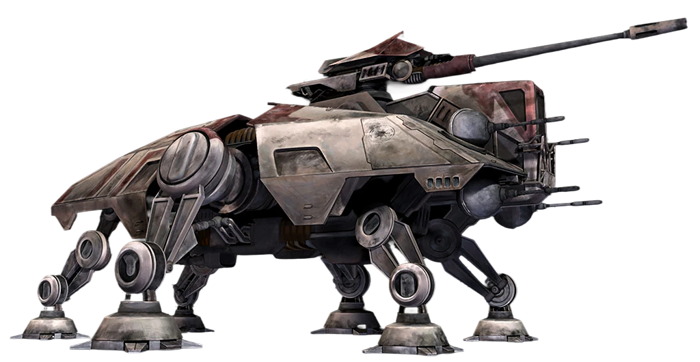
HAVw A6 «Джаггернаут»
Тяжёлый колесный штурмовой транспорт, модернизированная версия A5. За свой массивный и неповоротливый внешний вид получил прозвище «катящаяся плита».
- Длина: 49,4 м
- Высота: 30,4 м
- Вместимость: до 300 солдат
- Производитель: Верфи Куата
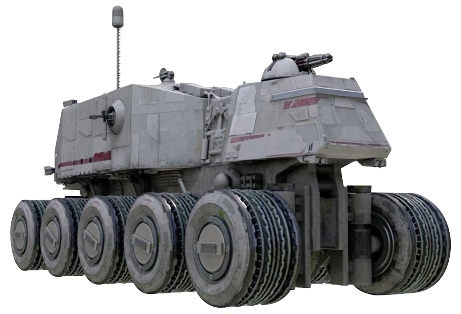
DBY-827 тяжёлая турболазерная турель
Двуствольная турболазерная турель, которая была частью вооружения звёздных разрушителей типа «Венатор». Имела семь различных режимов интенсивности.
- Тип: Турболазерная турель
- Особенности: 7 режимов интенсивности
- Установка: Звёздные разрушители, наземные базы
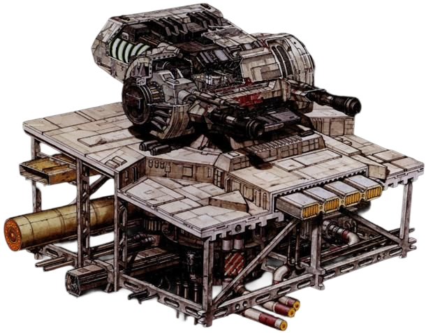
AV-7 противотанковая пушка
Самоходное артиллерийское орудие, использовавшееся Галактической Республикой во время Войн клонов. Орудие могло перемещаться по полю боя с помощью встроенных репульсоров.
- Производитель: Тэйм и Бэк
- Тип: Самоходная артиллерийская пушка
- Особенности: Репульсорное перемещение
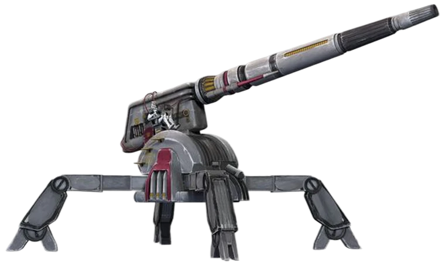
Воздушная техника
Дельта-7 «Эфирная фея»
Более известный как Джедайский истребитель. Разработанный инженером Уолексом Блиссексом, «Эфирная фея» изначально была слишком мала для установки гипердвигателя.
- Модель: Дельта-7 Aethersprite
- Разработчик: Уолекс Блиссекс
- Ускорение: 5000 G
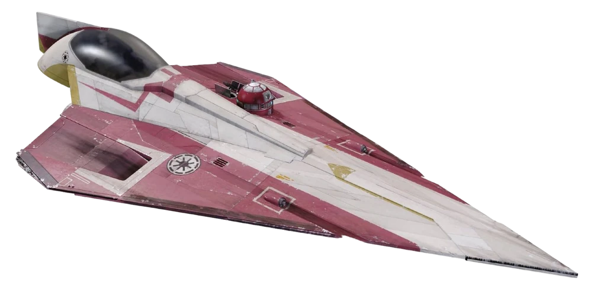
Штурмовой шаттл Ню
Атакующий шаттл, используемый Великой армией Республики. Был гораздо более живучим и быстрым кораблём, чем обычная канонерка LAAT/i.
- Производитель: Cygnus Spaceworks
- Вместимость: 30 солдат
- Особенности: Прочная броня, щиты
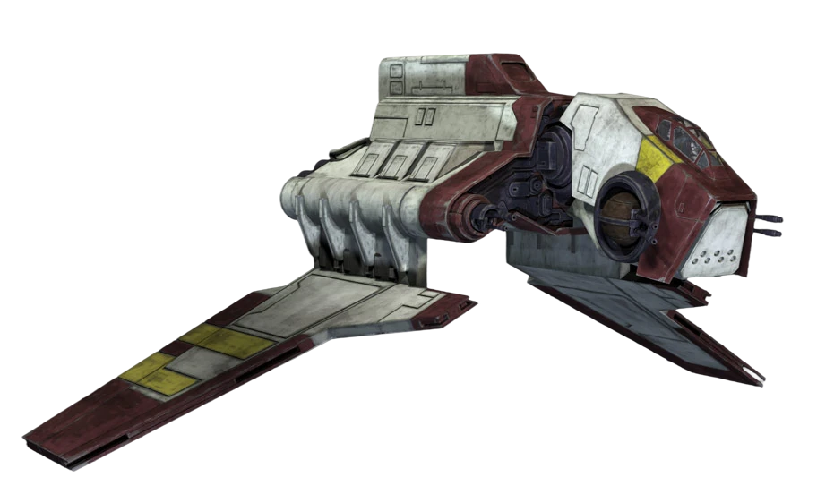
V-19 «Поток»
Предшественник звёздного истребителя «V-wing». Уникальность V-19 заключалась в его разворачивающихся крыльях, на каждом из которых стояли субсветовые двигатели.
- Производитель: Слайн и Корпил
- Вооружение: 2 лазерные пушки, 2 ракетные пусковые установки
- Особенности: Разворачивающиеся крылья
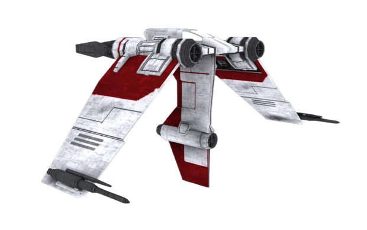
ARC-170
Тяжёлый истребитель-бомбардировщик, совместно производимый корпорациями «Инком» и «Субпро». Экипаж состоял из трёх клонов: пилота, второго пилота-стрелка и хвостового стрелка.
- Производитель: Incom / Subpro
- Экипаж: 3 клона
- Вооружение: 6 протонных торпед, лазерные пушки
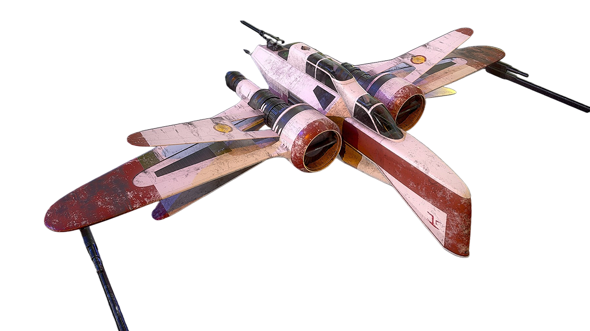
ARC-40b
Класс средних лёгких звёздных истребителей, которые использовались Республиканским истребительным корпусом во время Войн клонов.
- Тип: Лёгкий звёздный истребитель
- Класс: Средний лёгкий истребитель
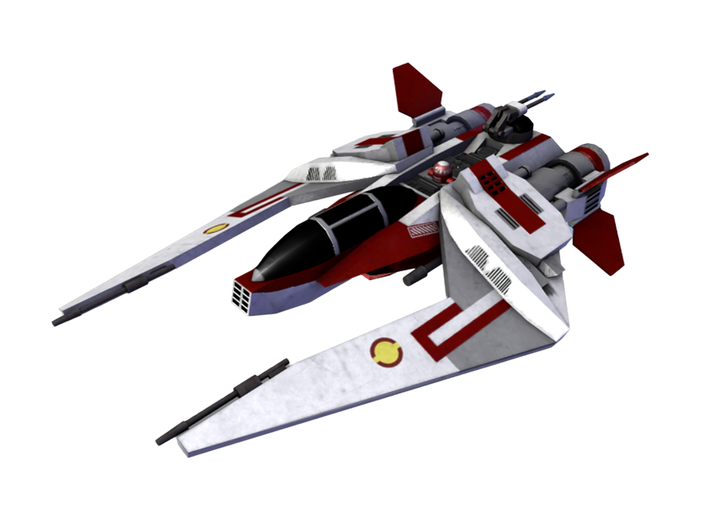
Z-95 «Охотник за головами»
Одноместный звёздный истребитель, модификация популярного Z-95. Отличался скоростью и маневренностью за счёт своей обтекаемой конструкции.
- Производитель: Incom / Subpro
- Экипаж: 1
- Вооружение: Лазерные пушки, торпедные установки
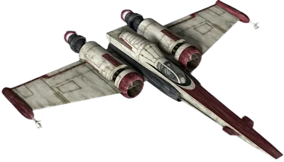
LAAT канонерка
Серия канонерок, использовавшаяся Великой армией Республики. Разработана для доставки до 30 солдат-клонов к полю боя и их поддержки.
- Производитель: Тяжёлое машиностроение Ротаны
- Вместимость: 30 солдат
- Вооружение: Лазерные турели, ракетные установки
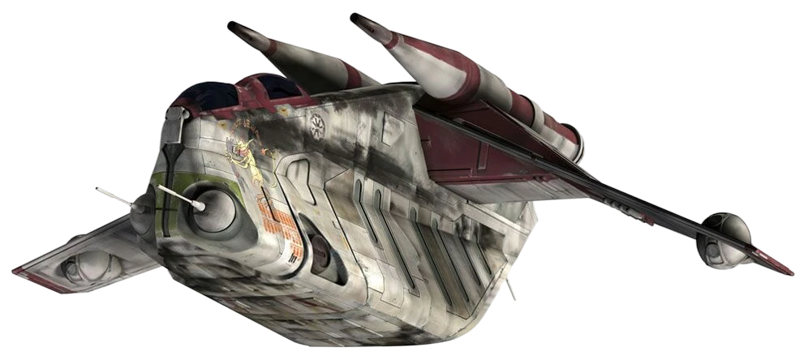
V-wing
Истребитель ближнего радиуса действия, имевший клиновидную форму. На концах его крыльев были установлены лазерные пушки.
- Модель: Альфа-3 Nimbus-class
- Вооружение: Лазерные пушки на поворотных турелях
- Особенности: Откидные крылья-радиаторы
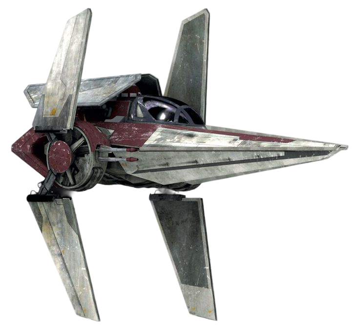
NTB-630 бомбардировщик
Бомбардировщик, выпускавшийся во время Войн клонов корпорациями Incom и Subpro. Созданный как минимум для одного пилота и предназначенный для атаки крупных кораблей в космосе.
- Производитель: Incom / Subpro
- Экипаж: 1 пилот
- Тип: Космический бомбардировщик
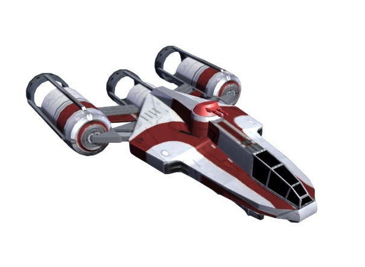
BTL Y-wing
Многоцелевой звёздный истребитель-бомбардировщик, производимый компанией «Производство Коенсэра». Наиболее известные модели: одноместные ударные звёздные истребители/бомбардировщики BTL-A4 «Y-wing», а также двухместные BTL-B «Y-wing» и BTL-S3.
- Производитель: Производство Коенсэра
- Модели: BTL-A4, BTL-B, BTL-S3
- Тип: Многоцелевой бомбардировщик
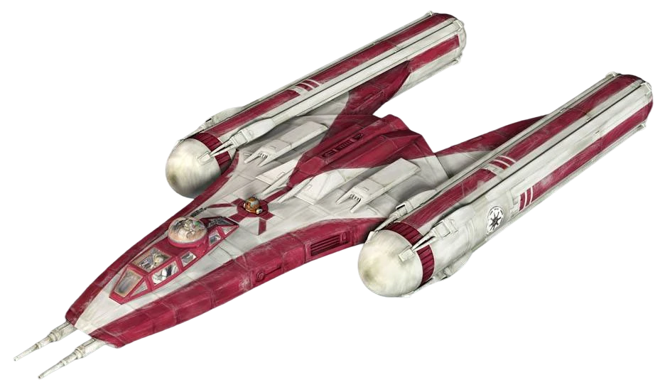
Y-wing облегчённый
Облегчённая версия многоцелевого бомбардировщика Y-wing. Использовалась для быстрых разведывательных и ударных миссий, где требовалась высокая манёвренность и скорость.
- Производитель: Производство Коенсэра
- Тип: Облегчённый бомбардировщик
- Особенности: Повышенная манёвренность
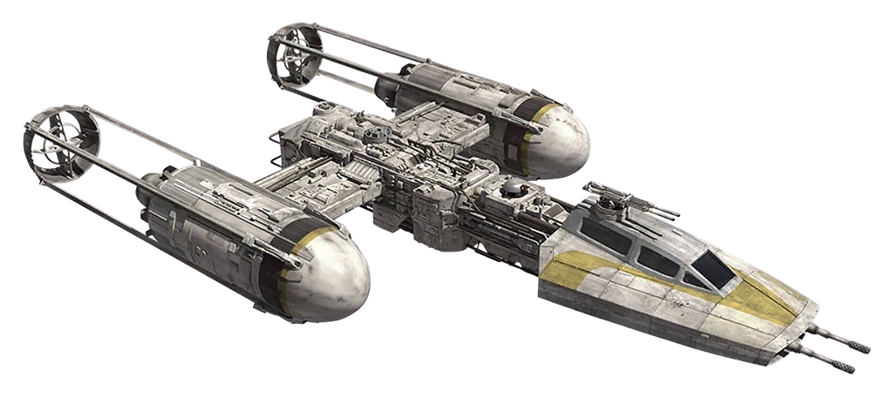
LAAT/c носитель
Лёгкий воздушный транспортник из серии LAAT, предназначенный для доставки на поле боя боевого шагохода AT-TE. Инженеры взяли за основу LAAT/i, изменив положение крыльев и установив вместо десантного отделения мощные магнитные захваты.
- Производитель: Тяжёлое машиностроение Ротаны
- Предназначение: Транспортировка AT-TE
- Особенности: Магнитные захваты
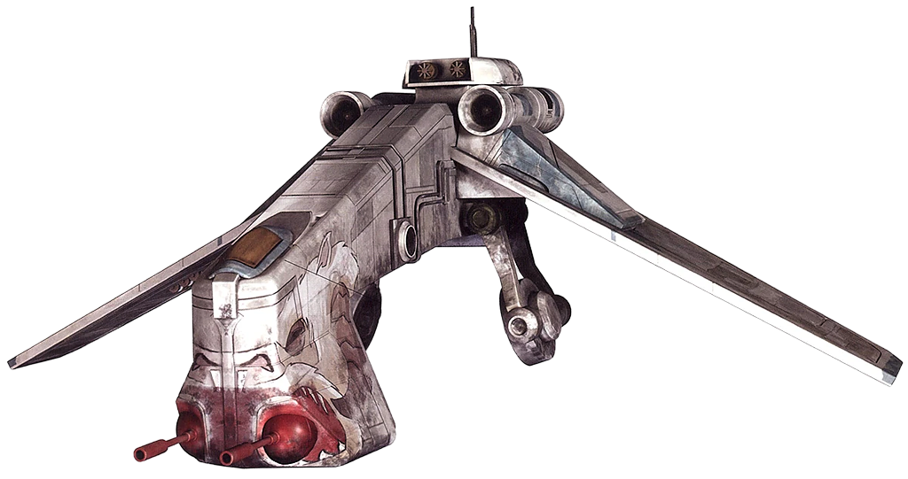
LAAT/le патрульный транспорт
Боевой корабль, введённый во время Войн клонов для выполнения правоохранительных функций в столице Республики — Корусанте. Разработанный для того, чтобы быть более маневренным, чем LAAT/i.
- Производитель: Тяжёлое машиностроение Ротаны
- Класс: Патрульно-штурмовой транспорт
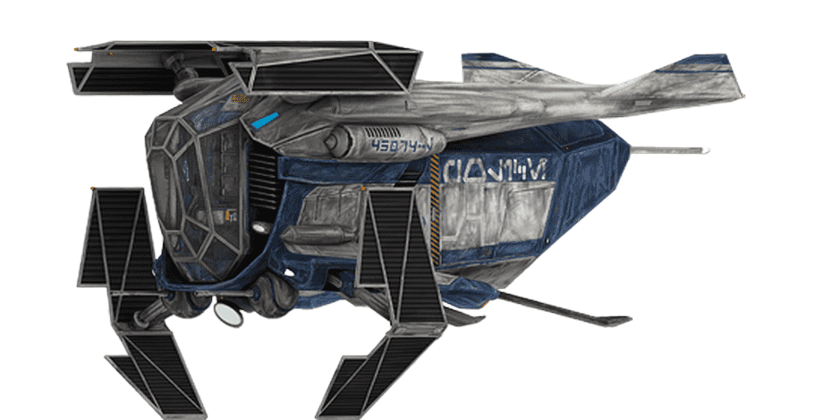
Космическая техника
«Сияющий VII»
Один из многих космических крейсеров, используемых Галактической Республикой для перевозки дипломатов. Имел 115 метров в длину, 3 радиальных двигателя, гипердвигатели второго класса.
- Длина: 115 м
- Экипаж: 8
- Пассажиры: 16
- Особенности: Дипломатический иммунитет
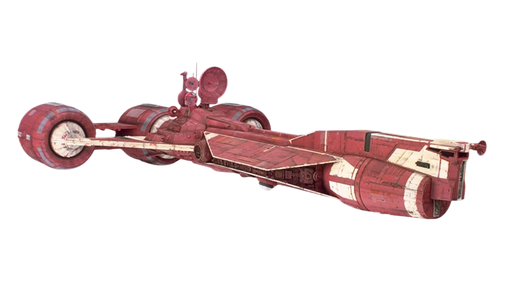
Корвет CR90
Многоцелевой корабль, производимый Corellian Engineering Corporation. Имел модульную конструкцию, что позволяло легко изменить его конфигурацию.
- Производитель: Corellian Engineering Corporation
- Вооружение: 2 сдвоенных турболазера H9, 4 одинарных турболазера
- Особенности: Модульная конструкция
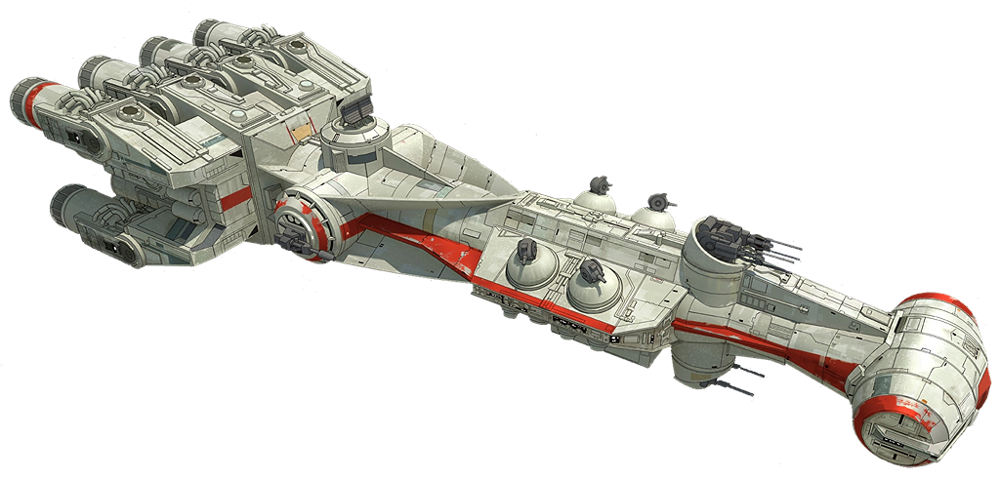
Фрегат Пелта
Крупный корабль модульного дизайна, использовавшийся в качестве медицинского звездолёта. Медицинский вариант был окрашен в красный цвет Республиканского флота.
- Тип: Медицинский фрегат
- Вооружение: 2 лёгкие турболазерные батареи, 3 лазерные пушки
- Особенности: Модульный дизайн
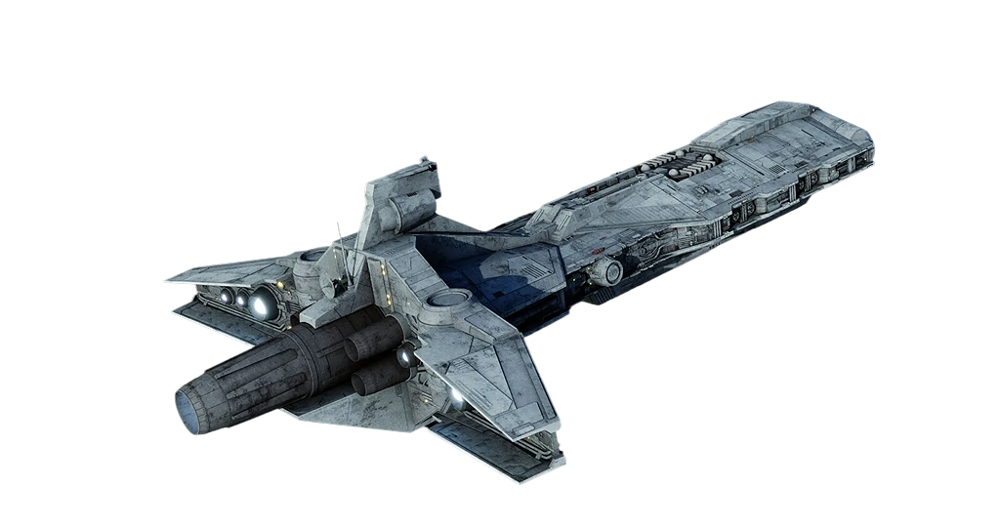
Лёгкий крейсер Арквитенс
Звёздный корабль, состоявший во флоте Галактической Республики. Напоминал уменьшенную версию звёздного разрушителя типа «Венатор». Суммарная огневая мощь была весьма велика для эскортного корабля.
- Вооружение: Сдвоенные турболазерные пушки, ракетные установки
- Особенности: Т-образная командная башня
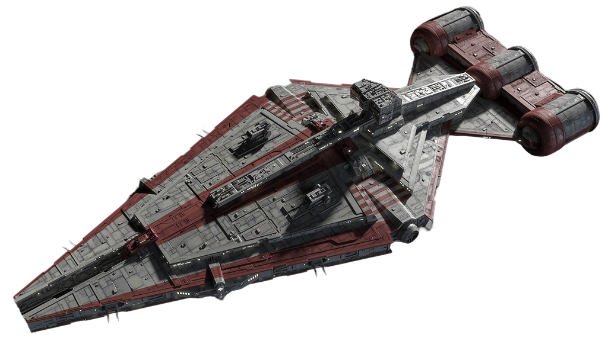
Аккламатор
752-метровый штурмовой транспорт, мог доставить на поле боя несколько тысяч солдат-клонов. Группа таких кораблей была в состоянии выполнить орбитальную бомбардировку.
- Длина: 752 м
- Вместимость: несколько тысяч солдат
- Вооружение: Турболазеры, торпедные установки
- Особенности: 80 канонерок LAAT/i
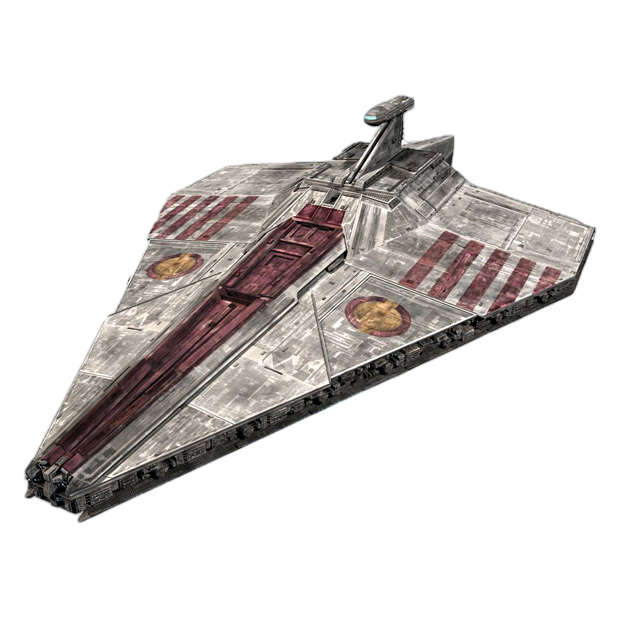
Венатор
Один из основных кораблей, использовавшихся Великой армией Республики. Имел 1 137 метров в длину, делая его одним из крупнейших кораблей, приспособленных к атмосферным операциям.
- Длина: 1 137 м
- Производитель: Верфи Куата
- Вооружение: 8 тяжёлых сдвоенных турболазеров DBY-827
- Особенности: Носитель истребителей
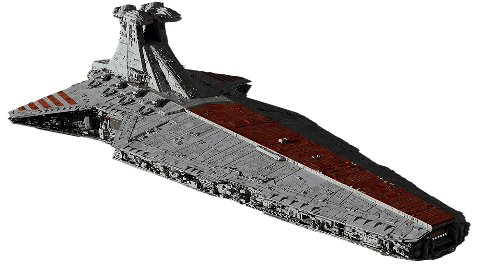
Консульский крейсер
Крейсер, производимый Corellian Engineering Corporation. Используется Галактической Республикой для транспортировки джедаев и дипломатов в проблемные места по всей галактике.
- Производитель: Corellian Engineering Corporation
- Класс: Консульский крейсер
- Особенности: Дипломатический иммунитет
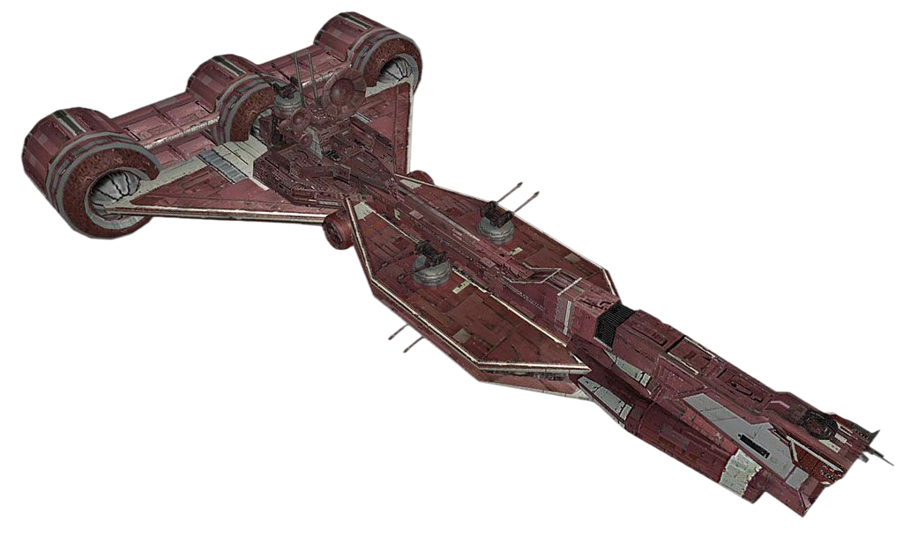